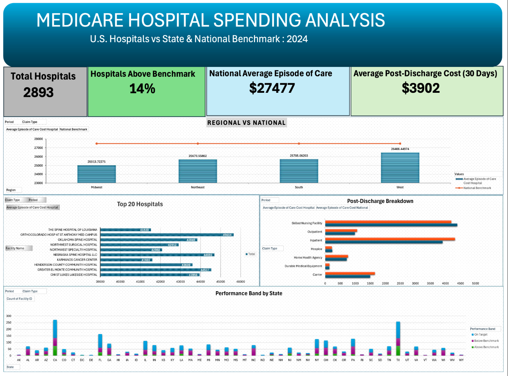

Reviewed the dataset structure, definitions, claim types, and episode periods.
← Back to featured projects
Healthcare Cost Analytics
Medicare Hospital Spending Analysis
A healthcare analytics project examining Medicare spending across hospitals, claim types, care periods, states, and national benchmarks to identify spending patterns and potential areas for operational review.

01 · Overview
Examining Medicare spending across hospital episodes
This project explores Medicare hospital spending data organized by hospital, claim type, care period, state averages, and national averages.
The purpose is to identify variation in spending, compare hospital-level performance with broader benchmarks, and highlight patterns that may warrant additional financial or operational investigation.
02 · Business problem
The challenge
Healthcare spending varies across hospitals, geographic areas, claim categories, and stages of care. Without structured analysis, it can be difficult to determine where spending differs from state or national benchmarks and which claim types contribute most heavily to an episode of care.
The project focuses on making those differences easier to interpret through data preparation, comparison, and visualization.
03 · My role
What I completed
- Reviewed and prepared hospital spending data.
- Examined claim types and care-period categories.
- Compared hospital spending with state and national averages.
- Identified variation and potential spending drivers.
- Created summary metrics and visualizations.
- Published the prepared dataset on Kaggle.
- Documented analytical limitations and possible next steps.
04 · Dataset
Medicare hospital spending data
The dataset contains hospital-level Medicare spending information by claim type and care period, along with hospital, state, and national spending comparisons.
Important fields
- Hospital name and provider identification
- State or geographic location
- Claim type
- Episode or care-period category
- Hospital average spending
- State average spending
- National average spending
- Percentage of total episode spending
05 · Analytical questions
Questions explored
- Which claim types account for the largest share of hospital episode spending?
- How does hospital spending compare with state and national averages?
- Which hospitals show the greatest difference from available benchmarks?
- How does spending change across care periods?
- Are there states or claim categories with consistently higher spending?
- Which patterns should receive further review rather than immediate conclusions?
06 · Approach
Analysis process
Standardized fields, reviewed missing values, and prepared numerical spending measures.
Compared hospital values with corresponding state and national averages.
Grouped spending by hospital, claim type, period, and geographic area.
Created charts and KPI summaries to make spending differences easier to interpret.
Converted findings into cautious, business-focused observations and recommendations.
07 · Key Findings
Findings from the analysis
- Only 14% of hospitals were identified as performing above the benchmark, indicating that the majority of hospitals were either on target or below the national spending benchmark.
- The national average episode-of-care cost was $27,477, providing a consistent benchmark for comparing hospital and regional spending performance.
- Hospitals in the West region showed the highest average episode-of-care spending among the four regions, while the Midwest had the lowest average spending in the comparison.
- Skilled Nursing Facility and Inpatient services represented the largest components of post-discharge spending, whereas categories such as Durable Medical Equipment and Home Health Agency contributed a much smaller share of total costs.
- Performance varied considerably across states, with hospitals distributed across Above Benchmark, On Target, and Below Benchmark categories, demonstrating the importance of evaluating healthcare spending at both regional and state levels rather than relying solely on national averages.
- Analysis of the top-spending hospitals showed noticeable variation in average episode-of-care costs, suggesting that hospital-level comparisons can help identify organizations for further financial and operational review while accounting for differences in patient populations and services provided.
Hospital - State, and National spending comparisons.
08 · Recommendations
Potential actions supported by the analysis
- Review claim categories that consistently exceed state or national comparisons.
- Monitor spending separately across the stages of an episode instead of relying only on one total.
- Investigate outlier hospitals while accounting for patient complexity and service mix.
- Combine spending measures with quality and outcome data before assessing efficiency.
- Use consistent benchmark definitions across reporting periods.
09 · Limitations
What this analysis cannot establish
- Higher spending does not automatically indicate inefficiency or poor performance.
- The dataset may not fully account for patient complexity, case mix, or local operating costs.
- Hospital-level averages do not represent individual patient experiences.
- Spending comparisons should be evaluated with quality, outcomes, and utilization measures.
- The analysis identifies associations and patterns, not causal relationships.
10 · Reflection
What I learned
This project strengthened my ability to work with healthcare financial data, compare organizations against benchmarks, analyze claim-level categories, and communicate spending patterns without assuming that higher cost alone represents poor performance.
Publishing the dataset on Kaggle also helped me practice data documentation, public presentation, metadata preparation, and making analytical resources easier for others to understand.